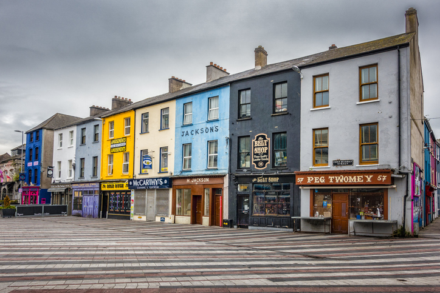

Area umanistica
Inglese
Inglese è una materia che nel corso degli anni ha assunto un significato sempre più concreto. Se inizialmente la vedevo soprattutto come una disciplina scolastica, l'esperienza Erasmus mi ha fatto capire quanto sia importante nella vita quotidiana e nel mondo del lavoro. Vivere per un mese in Irlanda mi ha permesso di utilizzare l'inglese ogni giorno, migliorando la mia capacità di comunicare e rendendomi più sicura nell'esprimermi.
Tra gli argomenti affrontati durante il quinto anno, quello che mi ha interessato maggiormente è stata la Irish Question, perché mi ha permesso di approfondire la storia e l'identità di un Paese che ho avuto la fortuna di conoscere da vicino durante il mio soggiorno Erasmus. Studiare il complesso rapporto tra Irlanda e Regno Unito, le tensioni politiche e sociali che hanno caratterizzato la storia irlandese e il percorso che ha portato alla nascita dello Stato irlandese mi ha aiutata a comprendere meglio la cultura del luogo in cui ho vissuto per un mese.
Grazie all'Erasmus, questo argomento non è rimasto soltanto una parte del programma scolastico, ma è diventato qualcosa di più personale. Ho potuto collegare ciò che studiavo in classe alle esperienze vissute direttamente in Irlanda, osservando aspetti della cultura e dell'identità irlandese che prima conoscevo solo attraverso i libri.
Oltre agli aspetti storici e culturali, l'inglese rappresenta oggi una competenza fondamentale anche nel settore informatico, dove gran parte della documentazione tecnica, dei software e delle risorse di apprendimento è disponibile proprio in questa lingua.
